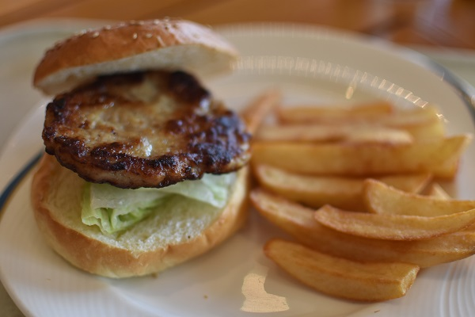
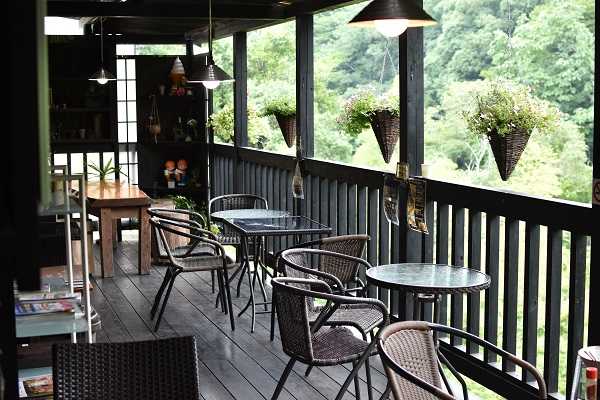
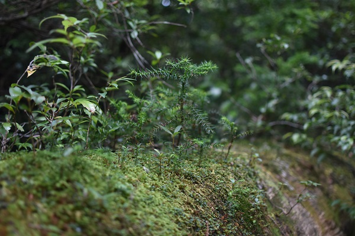
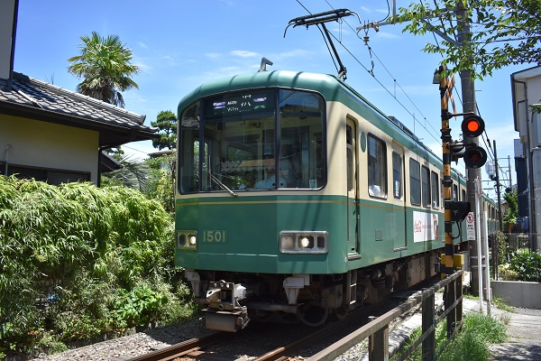
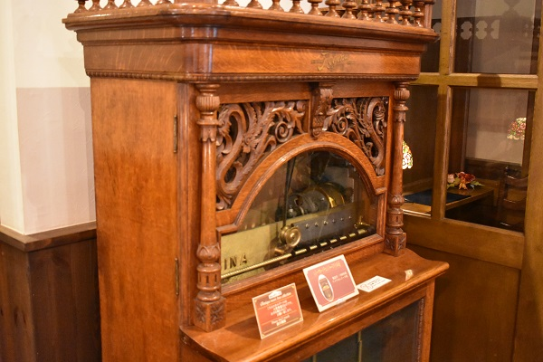
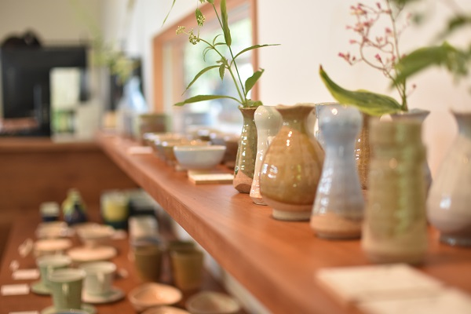

私のプロフィールです。
今まで行ってきた業務内容についてザックリ書いています。
Program
IT業界で営業やマーケティングを経験するうちに、プログラミングに興味を示す。 色々なサービスの裏側に興味を示しつつ、自分でもプログラムを組んでみたくなり現在勉強中。 HTML,CSS,JavaScript,PHP,mysql...とりあえずWeb関連のプログラムの基礎をオンライン家庭教師サービスで勉強。 色々なプロジェクトを経験して、1年以内に自分でもサービスをスタートさせたいと夢想中。
Marketing
Webサイトのアクセス分析やコンテンツの評価、改善策の提案等を実施。1年間でインバウンドの10倍増加を達成。 その他イベントへの出展、展示に関する調整、パートナー企業との渉外などを多方面にわたり実施。 直近では、アマゾンウェブサービスジャパン(AWS)のパートナーランクをエントリーからアドバンスドへ昇格させたりSDP取得に貢献。
営業
BtoBにおいて新規開拓やパートナー/商社を使った協業提案を実施。ド新規は時間がかかるため常に3か月後に成果が出るかを考え優先順位を決めていました。 結果には理由が伴うものなので、活動内容を数字で分析し、結果にコミット出来るように効率化を心がけます。 大勝はなくても大負けはなく、アベレージで平均越えを能動的な活動で実現する。みたいな。
趣味で取った写真を張っていきます。食べ物とか風景多めです。ニコン一眼レフD3400使用。





